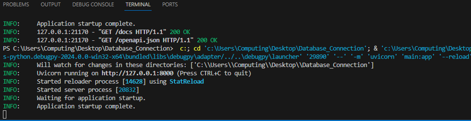
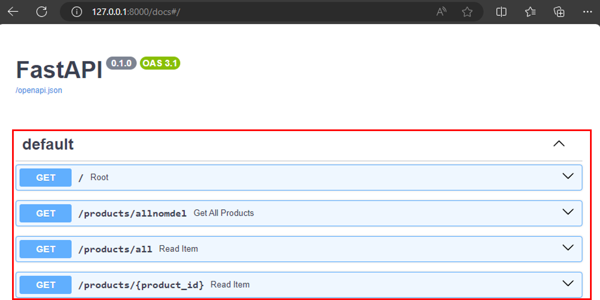
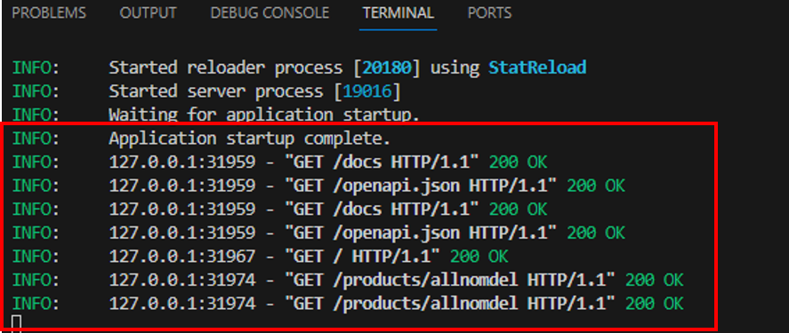

In this tutorial, you are going to learn the basics of designing and developing an API with endpoints using FastAPI and integrating your application to a database. Understanding the concepts and practical elements of developing an API is a valuable skillset and something many employers are looking for in terms of development and eventual deployment to the cloud.
By now, you are familiar with the initial FastAPI project/application setup. However, this is repeated so that each workshop presents a complete walkthrough.
OK - to start developing a FastAPI project, first create a folder on the desktop, you can call it MyCoursework. Next, open Visual Studio Code (ensure there are no folders/files open when it has launched, if so close them), open the MyCoursework folder and trust its content if you see the pop up:


You will now see your folder is open in VSC on the left panel. Next, create a file called requirements.txt:
The requirements.txt file lists the dependencies you wish to install for the application. The requirements.txt file is a common practice in Python development, used to specify the libraries that your project relies on and their versions. This file helps ensure that anyone working on the project can recreate a similar development environment, making it a convenient component for maintaining consistency. Add the below dependencies to the file:
fastapi
mysqlclient
uvicorn
Next, save the file either by File>Save or CTRL+S.
The lines of code you have added to requirements.txt will install FastAPI for creating the API app, uvicorn to work as the local server to host and test the API, and mysqlclient for handling data storage and interacting with a MySQL database.
Next, you will setup a virtual environment to debug and test the FastAPI app, as well as download the dependencies in the requirements.txt file, follow the steps below:
1. Open the command palette (Ctrl+Shift+P) and select the Python: Create Environment command (you may need to type 'create environment' to see it in list):

2. Select the Venv environment type:

3. Next, select the latest version (if more than one version available) of Python on the machine:

4. Next, select the requirements.txt file from the dropdown list, so the dependencies are automatically installed, and then select OK:

5. The virtual environment will now be created and could take a minute or two to install. This means the dependencies will automatically beinstalled, and the environment selected (Venv) for your workspace to be used by the Python extension.

6. With the project folder configured, you can now start coding the app. Create a new python file called main.py, ensure it is placed outside the Venv folder:

7. Next, enter the below code in the main.py file
from itertools import product
from fastapi import FastAPI, HTTPException, Depends, status
from pydantic import BaseModel
from typing import List, Optional
from dbConn import conn
app = FastAPI()
# Pydantic model to define the schema of the data for PU POST DELETE
class Products(BaseModel):
ProductID: int
Name: str
@app.get("/")
def root():
return {"message": "Introducing my coursework"}
Now that we have the FastAPI main python file, we can define our database connection.
8. Create a new Python file with File > New File… and then select Python File. Add the following lines to your new file and save as dbConn.py,
import MySQLdb
# Database configuration
db_config = {
'host': 'localhost',
'user': 'root',
'passwd': 'computing',
'db': 'AdventureWorks2019',
}
# Create a connection to the database
conn = MySQLdb.connect(**db_config)
9. Save the main.py&dbConn.py file and then run the code by either going to Run>Start Debugging or hit [F5]. From the dropdown menus, select Python Debugger and then FastAPI as below:
This invokes uvicorn to start the application server through the debugger and allow you to step through the source code to inspect its behaviour. You should see something like the following under the terminal tab in bottom pane of VSC.



10. Open Docker Desktop app on your local machine to start your AdventureWorks database server. AdventureWorks database is a popular sample database for developers and database administrators. The database contains data such as the parts and materials to manufacture cycles as well as customer information.

11. In the context of web applications, routes are like pathways that map specific URLs to the code that handles them. These routes serve as the entry points for the different functionality within application. When a client, sends a request to your application with a particular URL, FastAPI routes that request to the appropriate function (also known as route handler or view function) based on the URL, and that function processes the request and generates a response. Add the following code to your main.py file to update the route with three (3) different GET requests:
# Route to return 50 products (MAX) from the production_product table via a GET request (no parameters used) without using a datamodel
@app.get("/products/allnomdel")
def get_all_products():
cursor = conn.cursor()
cursor.execute("SELECT ProductID, Name FROM Production_Product LIMIT 50")
result = cursor.fetchall()
return {"products": result}
# Route to return 50 products (MAX) from the production_product table via a GET request (no parameters used) using a Pydantic Datamodel
@app.get("/products/all", response_model=List[Products])
def read_item():
cursor = conn.cursor()
query = "SELECT ProductID, Name FROM Production_Product LIMIT 50"
cursor.execute(query)
item = cursor.fetchall()
cursor.close()
if item is None:
raise HTTPException(status_code=404, detail="Item not found")
item = [Products(ProductID=productitem[0], Name=productitem[1]) for productitem in item]
return item
# Route to return a specific product from the production_product table item via a GET request using a parameter (ProductID)
@app.get("/products/{product_id}", response_model=Products)
def read_item(product_id: int):
cursor = conn.cursor()
query = "SELECT ProductID, Name FROM Production_Product WHERE ProductID=%s"
cursor.execute(query, (product_id,))
item = cursor.fetchone()
cursor.close()
if item is None:
raise HTTPException(status_code=404, detail="Item not found")
return {"ProductID": item[0], "Name": item[1]}
12. Start the debugger (F5), and then navigate to http://127.0.0.1:8000/docs in the browser. There should be a Swagger interface with four(4) endpoints available in the app.


13. Select the drop down arrow next to the /products/all route to expand it, and then the Try it out button that appears on the right side.

@app.post("/products/{product_id}", response_model=Products)
def add_item(product_name: str, product_id: int):
if product_id <= 0:
raise HTTPException(status_code=400, detail="Quantity must be greater than 0.")
return {"item"}
@app.put("/products/{product_id}", response_model=Products)
def add_item(product_name: str, product_id: int):
if product_id <= 0:
raise HTTPException(status_code=400, detail="Quantity must be greater than 0.")
return {"item"}
@app.delete("/products/{product_id}", response_model=Products)
def delete_item(product_id: int):
if product_id not in Products:
raise HTTPException(status_code=400, detail="product not found.")
return {"item"}

Thats all for this week. We have covered integrating API to database which is an integral part of your coursework. Next workshop will be a support session for you to work on your coursework.